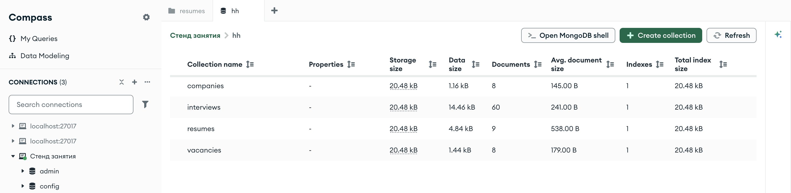
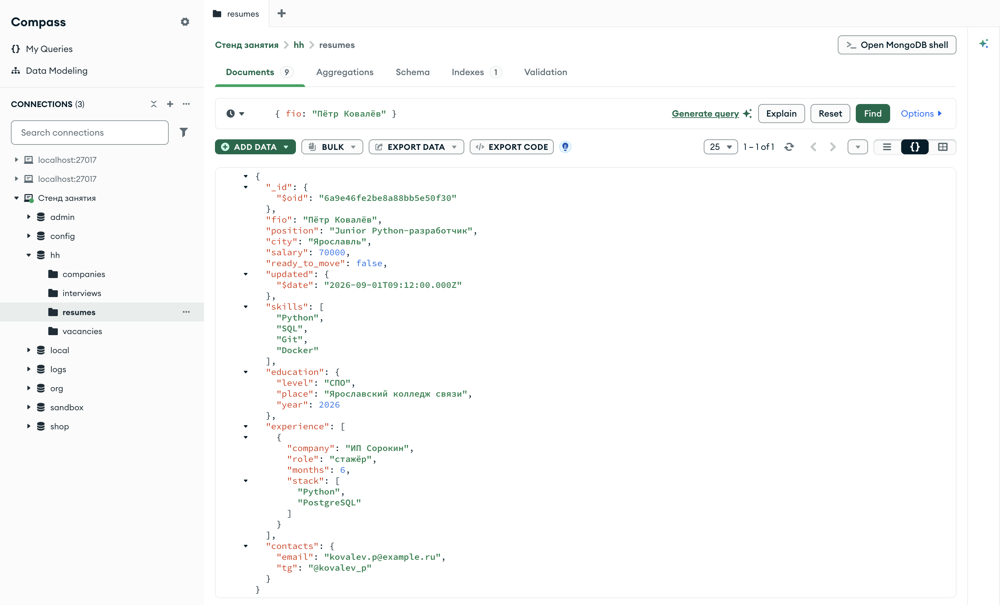
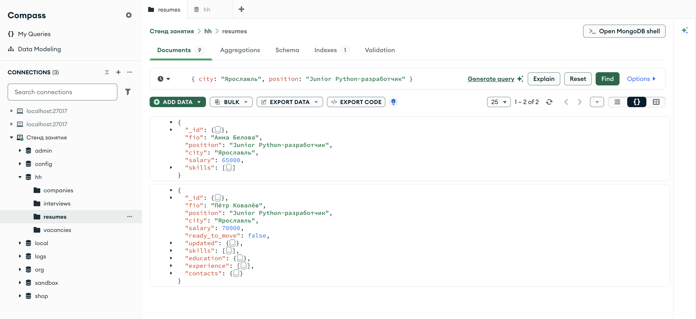
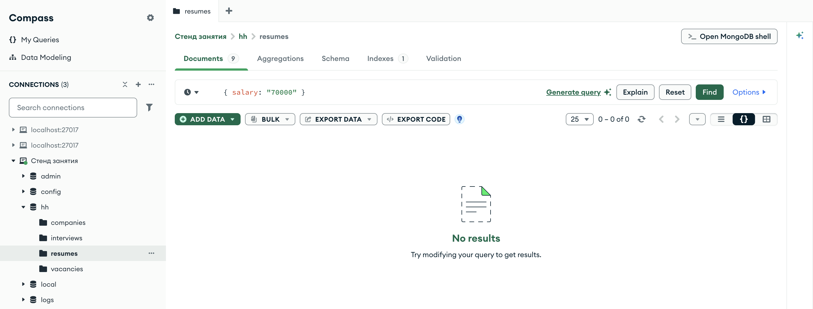
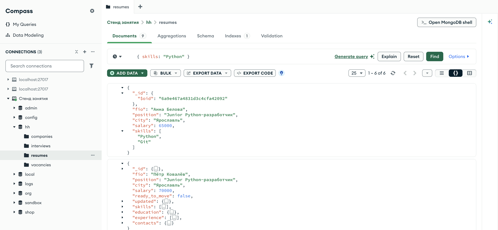
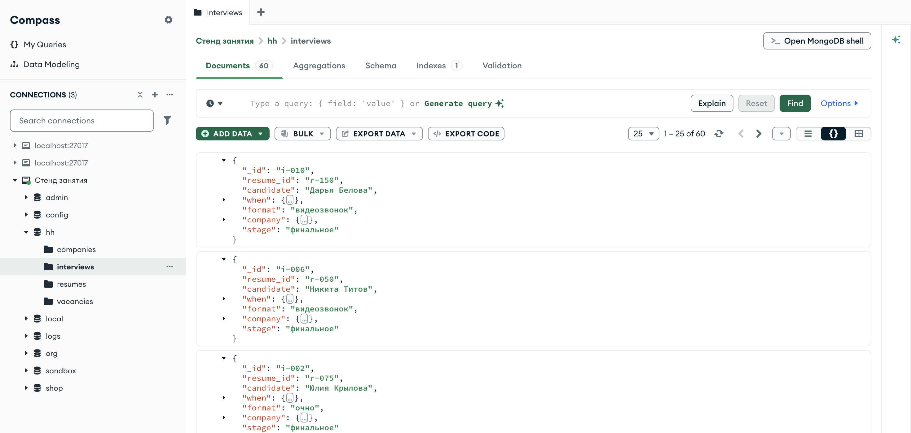
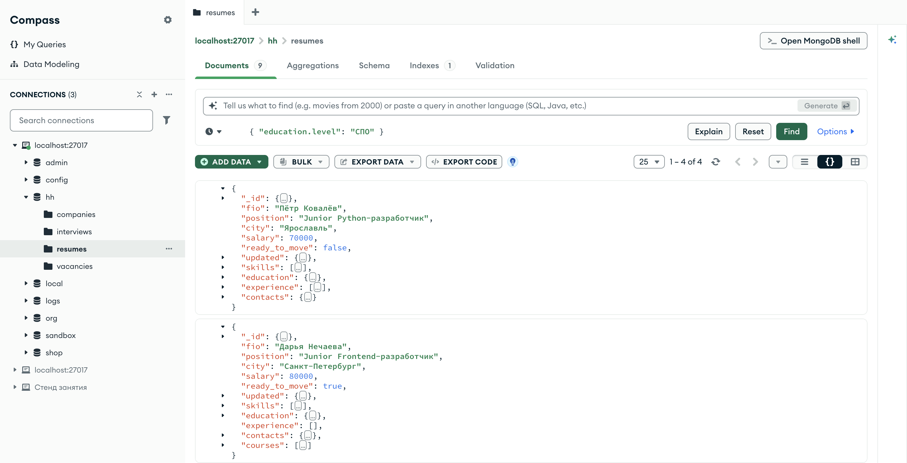

Справочник по MongoDB · модуль 2 · язык фильтров
2.1
Фильтр — это документ.
Точечная нотация
В модуле 1 фильтр встречался как «документ с условиями» и почти везде состоял из одной пары. Здесь разобрано, что происходит, когда пар несколько, почему совпадение проверяется по типу значения, и как добраться до поля, лежащего внутри другого документа.
- Категория
- Язык запросов
- Уровень
- Начальный
- Связанные темы
- Чтение и курсор, операторы сравнения,
$matchв агрегации - Зачем это знать
- Писать условия отбора и понимать, почему запрос вернул пусто
Как запускать примеры этой главы
mongodb-glava-2.1-python.zip, 60 КБmongodb-glava-2.1-ruby.zip, 60 КБmongodb-glava-2.1-go.zip, 65 КБmongodb-glava-2.1-cpp.zip, 63 КБ — все примеры главы готовыми программами, учебные базы и стенд в Docker. В README.md — запуск в Docker, если Compass нет или он не подключается, и на установленном сервере с Compass, а также что должна напечатать каждая программа.lessons/ch2_1.py — пример вставляется в конец файлаlessons/ch2_1.rb — пример вставляется в конец файлаlessons/ch2_1.go — пример внутрь скобок в конце main, функции и типы — выше mainlessons/ch2_1.cpp — пример внутрь скобок в конце main, функции — выше maincd lessons, затем python ch2_1.pycd lessons, затем python3 ch2_1.py · в Docker: docker compose run --rm python lessons/ch2_1.pycd lessons, затем ruby ch2_1.rb · в Docker: docker compose run --rm ruby lessons/ch2_1.rbcd lessons, затем go run ch2_1.go · в Docker: docker compose run --rm go lessons/ch2_1.gocd lessons, затем g++ -std=c++17 ch2_1.cpp -o prog $(pkg-config --cflags --libs libmongocxx1) && ./prog · в Docker: docker compose run --rm cpp lessons/ch2_1.cpp§1База hh: четыре коллекции
Модуль 1 целиком прошёл на базе shop: товары, заказы, покупатели. Модуль 2 работает на базе hh — это данные сервиса по найму. Она подходит для языка фильтров тем, что документы в ней устроены сложнее: есть вложенные документы, массивы строк и массивы документов, а часть полей заполнена не у всех записей.
В базе четыре коллекции:
| Коллекция | Сколько | Что внутри |
|---|---|---|
resumes | 9 | Резюме соискателей: город, зарплата, навыки, образование, опыт |
vacancies | 8 | Вакансии: название, компания, город, вилка зарплаты |
companies | 8 | Компании: отрасль, город, численность |
interviews | 60 | Собеседования: кандидат, дата, формат, этап, компания |

hh: те же четыре коллекции и те же количества документов, что в таблице вышеСтолбец Documents повторяет второй столбец таблицы, а Avg. document size показывает средний размер документа: у resumes он 538 байт против 145 у companies. Остальные столбцы — размер данных на диске и число индексов; для фильтров они не нужны.
В резюме полей больше, чем в документах остальных трёх коллекций. Ниже приведено одно резюме целиком — примеры главы обращаются к этим полям.
hh> db.resumes.findOne({ fio: "Пётр Ковалёв" })
{
_id: ObjectId('6a9e46fe2be8a88bb5e50f30'),
fio: 'Пётр Ковалёв',
position: 'Junior Python-разработчик',
city: 'Ярославль',
salary: 70000,
ready_to_move: false,
updated: ISODate('2026-09-01T09:12:00.000Z'),
skills: [ 'Python', 'SQL', 'Git', 'Docker' ],
education: { level: 'СПО', place: 'Ярославский колледж связи', year: 2026 },
experience: [
{
company: 'ИП Сорокин',
role: 'стажёр',
months: 6,
stack: [ 'Python', 'PostgreSQL' ]
}
],
contacts: { email: 'kovalev.p@example.ru', tg: '@kovalev_p' }
}

findOne: вложенные документы и массивы раскрыты треугольниками слеваCompass показывает тот же документ, что и mongosh, только в своей раскраске: имена полей слева, значения справа, строки зелёным, числа синим. Поле _id раскрыто в $oid, а updated — в $date: так Compass показывает типы BSON, у которых нет записи в JSON.
В этом документе три вида полей, и для каждого фильтр пишется по-своему:
fio, city, salary, ready_to_move — строка, число, логическое значение.§2–§4education и contacts: внутри поля лежит ещё один документ со своими полями.§5skills — массив строк, experience — массив документов.§6Вакансия устроена проще, но и в ней есть вложенный документ: зарплата задана вилкой.
hh> db.vacancies.findOne()
{
_id: 'v-001',
title: 'Junior Python-разработчик',
company: 'Тензор',
city: 'Ярославль',
salary: { from: 60000, to: 90000 },
published: ISODate('2026-08-28T09:00:00.000Z'),
is_open: true
}
Поле salary в этих двух коллекциях устроено по-разному. В резюме это число — сколько человек хочет получать. В вакансии это документ с полями from и to — вилка, которую предлагает работодатель. Одно имя поля, разные типы значения в разных коллекциях: сервер это допускает, и в §4 разобрано, к чему это приводит в запросах.
§2Фильтр — это документ
Первый аргумент find называется фильтром. Это обычный документ — такой же, какие лежат в коллекции. В Python это словарь, в Ruby — хеш, в Go — bson.D, в C++ — документ, собранный через make_document.
Правило чтения такое: поле в фильтре означает «поле документа», значение — «должно быть равно этому». Документ попадает в результат, если совпадение есть.
for doc in resumes.find({"city": "Ярославль"}, {"fio": 1, "position": 1, "_id": 0}): print(doc)
mongocxx::options::find options; options.projection(make_document(kvp("fio", 1), kvp("position", 1), kvp("_id", 0))); for (const auto& doc : resumes.find(make_document(kvp("city", "Ярославль")), options)) { std::cout << bsoncxx::to_json(doc) << std::endl; }
cursor, _ := resumes.Find(ctx, bson.D{{Key: "city", Value: "Ярославль"}}, options.Find().SetProjection(bson.D{ {Key: "fio", Value: 1}, {Key: "position", Value: 1}, {Key: "_id", Value: 0}})) for cursor.Next(ctx) { var doc bson.M cursor.Decode(&doc) fmt.Println(doc) }
resumes.find( { "city" => "Ярославль" }, projection: { "fio" => 1, "position" => 1, "_id" => 0 } ).each { |doc| puts doc.inspect }
{'fio': 'Анна Белова', 'position': 'Junior Python-разработчик'}
{'fio': 'Пётр Ковалёв', 'position': 'Junior Python-разработчик'}
{'fio': 'Игорь Самойлов', 'position': 'Backend-разработчик C#'}
{'fio': 'Ксения Лапина', 'position': 'Тестировщик'}
{'fio': 'Ольга Пирогова', 'position': 'Аналитик данных'}
{ "fio" : "Анна Белова", "position" : "Junior Python-разработчик" }
{ "fio" : "Пётр Ковалёв", "position" : "Junior Python-разработчик" }
{ "fio" : "Игорь Самойлов", "position" : "Backend-разработчик C#" }
{ "fio" : "Ксения Лапина", "position" : "Тестировщик" }
{ "fio" : "Ольга Пирогова", "position" : "Аналитик данных" }
{"fio":"Анна Белова","position":"Junior Python-разработчик"}
{"fio":"Пётр Ковалёв","position":"Junior Python-разработчик"}
{"fio":"Игорь Самойлов","position":"Backend-разработчик C#"}
{"fio":"Ксения Лапина","position":"Тестировщик"}
{"fio":"Ольга Пирогова","position":"Аналитик данных"}
{"fio"=>"Анна Белова", "position"=>"Junior Python-разработчик"}
{"fio"=>"Пётр Ковалёв", "position"=>"Junior Python-разработчик"}
{"fio"=>"Игорь Самойлов", "position"=>"Backend-разработчик C#"}
{"fio"=>"Ксения Лапина", "position"=>"Тестировщик"}
{"fio"=>"Ольга Пирогова", "position"=>"Аналитик данных"}
Пять резюме из девяти. Проекция здесь только для краткости вывода — она разобрана в главе 1.5 и на отбор не влияет.
Если бы условие задавалось строкой, эту строку пришлось бы склеивать из кусков, и значение, пришедшее от пользователя, могло бы попасть в неё как часть условия. В документе имя поля и значение передаются отдельно, и значение остаётся значением. Документ к тому же собирают по частям в коде: условия добавляют в словарь по мере того, как они становятся известны.
§3Несколько условий: все должны выполниться
В фильтре может быть сколько угодно пар. Сервер проверяет все и возвращает документ, только если выполнены все условия сразу. Отдельного слова для этого не нужно: перечисление через запятую уже означает «и».
filtr = {"city": "Ярославль",
"position": "Junior Python-разработчик"}
print("город:", resumes.count_documents({"city": "Ярославль"}))
print("город и должность:", resumes.count_documents(filtr))
for doc in resumes.find(filtr, {"fio": 1, "salary": 1, "_id": 0}):
print(doc)
auto filtr = make_document(kvp("city", "Ярославль"), kvp("position", "Junior Python-разработчик")); std::cout << "город: " << resumes.count_documents(make_document(kvp("city", "Ярославль"))) << std::endl; std::cout << "город и должность: " << resumes.count_documents(filtr.view()) << std::endl; mongocxx::options::find options; options.projection(make_document(kvp("fio", 1), kvp("salary", 1), kvp("_id", 0))); for (const auto& doc : resumes.find(filtr.view(), options)) { std::cout << bsoncxx::to_json(doc) << std::endl; }
filtr := bson.D{
{Key: "city", Value: "Ярославль"},
{Key: "position", Value: "Junior Python-разработчик"}}
gorod, _ := resumes.CountDocuments(ctx, bson.D{{Key: "city", Value: "Ярославль"}})
oba, _ := resumes.CountDocuments(ctx, filtr)
fmt.Println("город:", gorod)
fmt.Println("город и должность:", oba)
cursor, _ := resumes.Find(ctx, filtr,
options.Find().SetProjection(bson.D{
{Key: "fio", Value: 1}, {Key: "salary", Value: 1}, {Key: "_id", Value: 0}}))
for cursor.Next(ctx) {
var doc bson.M
cursor.Decode(&doc)
fmt.Println(doc)
}
filtr = { "city" => "Ярославль",
"position" => "Junior Python-разработчик" }
puts "город: " + resumes.count_documents({ "city" => "Ярославль" }).to_s
puts "город и должность: " + resumes.count_documents(filtr).to_s
resumes.find(filtr, projection: { "fio" => 1, "salary" => 1, "_id" => 0 })
.each { |doc| puts doc.inspect }
город: 5
город и должность: 2
{'fio': 'Анна Белова', 'salary': 65000}
{'fio': 'Пётр Ковалёв', 'salary': 70000}
город: 5
город и должность: 2
{ "fio" : "Анна Белова", "salary" : 65000 }
{ "fio" : "Пётр Ковалёв", "salary" : 70000 }
город: 5
город и должность: 2
{"fio":"Анна Белова","salary":{"$numberInt":"65000"}}
{"fio":"Пётр Ковалёв","salary":{"$numberInt":"70000"}}
город: 5
город и должность: 2
{"fio"=>"Анна Белова", "salary"=>65000}
{"fio"=>"Пётр Ковалёв", "salary"=>70000}

1 – 2 of 2 над списком — те же два резюме, что напечатала программаВторое условие сократило выборку с пяти резюме до двух: в Ярославле пять соискателей, но на должность Junior Python-разработчика из них претендуют двое. Каждое добавленное условие сужает выборку или оставляет её прежней.
Порядок пар в фильтре ни на что не влияет: {"city": …, "position": …} и {"position": …, "city": …} — один и тот же запрос. Сервер сам решает, в каком порядке проверять условия.
§4Значение должно совпасть точно
Сравнение в фильтре идёт по значению и типу BSON. Число 70000 и строка "70000" — разные значения, и документ, где зарплата записана числом, по строке не найдётся.
print("salary 70000 числом: ", resumes.count_documents({"salary": 70000})) print("salary '70000' строкой:", resumes.count_documents({"salary": "70000"})) print("is_open True: ", vacancies.count_documents({"is_open": True})) print("is_open 'true': ", vacancies.count_documents({"is_open": "true"})) print("город с маленькой: ", resumes.count_documents({"city": "ярославль"}))
std::cout << "salary 70000 числом: " << resumes.count_documents(make_document(kvp("salary", 70000))) << std::endl; std::cout << "salary '70000' строкой:" << resumes.count_documents(make_document(kvp("salary", "70000"))) << std::endl; std::cout << "is_open true: " << vacancies.count_documents(make_document(kvp("is_open", true))) << std::endl; std::cout << "is_open \"true\": " << vacancies.count_documents(make_document(kvp("is_open", "true"))) << std::endl; std::cout << "город с маленькой: " << resumes.count_documents(make_document(kvp("city", "ярославль"))) << std::endl;
chislom, _ := resumes.CountDocuments(ctx, bson.D{{Key: "salary", Value: 70000}}) strokoy, _ := resumes.CountDocuments(ctx, bson.D{{Key: "salary", Value: "70000"}}) istina, _ := vacancies.CountDocuments(ctx, bson.D{{Key: "is_open", Value: true}}) tekstom, _ := vacancies.CountDocuments(ctx, bson.D{{Key: "is_open", Value: "true"}}) malenkoy, _ := resumes.CountDocuments(ctx, bson.D{{Key: "city", Value: "ярославль"}}) fmt.Println("salary 70000 числом: ", chislom) fmt.Println("salary '70000' строкой:", strokoy) fmt.Println("is_open true: ", istina) fmt.Println("is_open 'true': ", tekstom) fmt.Println("город с маленькой: ", malenkoy)
puts "salary 70000 числом: " + resumes.count_documents({ "salary" => 70000 }).to_s puts "salary '70000' строкой:" + resumes.count_documents({ "salary" => "70000" }).to_s puts "is_open true: " + vacancies.count_documents({ "is_open" => true }).to_s puts "is_open 'true': " + vacancies.count_documents({ "is_open" => "true" }).to_s puts "город с маленькой: " + resumes.count_documents({ "city" => "ярославль" }).to_s
salary 70000 числом: 1 salary '70000' строкой: 0 is_open True: 8 is_open 'true': 0 город с маленькой: 0
salary 70000 числом: 1 salary '70000' строкой:0 is_open true: 8 is_open "true": 0 город с маленькой: 0
salary 70000 числом: 1 salary '70000' строкой: 0 is_open true: 8 is_open 'true': 0 город с маленькой: 0
salary 70000 числом: 1 salary '70000' строкой:0 is_open true: 8 is_open 'true': 0 город с маленькой: 0
Три нуля в выводе получены по трём разным причинам:
- тип значения другой: зарплата хранится числом, а поиск идёт по строке;
- логическое значение записано текстом:
trueи"true"в BSON — разные типы; - регистр не совпал: сравнение строк посимвольное, «ярославль» и «Ярославль» — разные строки.

{ salary: "70000" }: вкладка Documents подписана числом 9, а под фильтр не подошло ни одногоТак выглядит несовпадение по типу в Compass: запрос выполнен без ошибки, счётчик показывает 0 – 0 of 0, и вместо документов стоит надпись No results. Кавычки вокруг 70000 в поле фильтра — единственное отличие от запроса, который находит документ.
Последний случай в модуле 2 решается шаблоном с $options: "i" — глава 2.7. Первые два случая средствами запроса не исправить: если под одним именем поля в базе лежат значения разных типов, их приводят к одному виду при записи.
Чаще всего — из веб-формы. Браузер присылает все поля текстом, и если при записи значение не привести к числу, в базе окажется "70000". Запросы с числом в фильтре такое поле не найдут, а сортировка выстроит значения как строки: "100000" окажется раньше "70000", потому что «1» меньше «7». Тип значения проверяется оператором $type — глава 2.5.
§5Точечная нотация: поле внутри документа
Когда в поле лежит другой документ, до его полей добираются через точку: "salary.from" читается как «поле from внутри поля salary». Такая запись называется точечной нотацией. Всё, что стоит в кавычках, — одно имя поля; точка входит в него как обычный символ.
for doc in vacancies.find({"salary.from": 60000}, {"title": 1, "salary": 1, "_id": 0}): print(doc) print("выпускники СПО:", resumes.count_documents({"education.level": "СПО"})) print("собеседования в Москве:", interviews.count_documents({"company.city": "Москва"}))
mongocxx::options::find options; options.projection(make_document(kvp("title", 1), kvp("salary", 1), kvp("_id", 0))); for (const auto& doc : vacancies.find(make_document(kvp("salary.from", 60000)), options)) { std::cout << bsoncxx::to_json(doc) << std::endl; } std::cout << "выпускники СПО: " << resumes.count_documents(make_document(kvp("education.level", "СПО"))) << std::endl; std::cout << "собеседования в Москве: " << interviews.count_documents(make_document(kvp("company.city", "Москва"))) << std::endl;
cursor, _ := vacancies.Find(ctx, bson.D{{Key: "salary.from", Value: 60000}}, options.Find().SetProjection(bson.D{ {Key: "title", Value: 1}, {Key: "salary", Value: 1}, {Key: "_id", Value: 0}})) for cursor.Next(ctx) { var doc bson.M cursor.Decode(&doc) fmt.Println(doc) } spo, _ := resumes.CountDocuments(ctx, bson.D{{Key: "education.level", Value: "СПО"}}) msk, _ := interviews.CountDocuments(ctx, bson.D{{Key: "company.city", Value: "Москва"}}) fmt.Println("выпускники СПО:", spo) fmt.Println("собеседования в Москве:", msk)
vacancies.find({ "salary.from" => 60000 }, projection: { "title" => 1, "salary" => 1, "_id" => 0 }) .each { |doc| puts doc.inspect } puts "выпускники СПО: " + resumes.count_documents({ "education.level" => "СПО" }).to_s puts "собеседования в Москве: " + interviews.count_documents({ "company.city" => "Москва" }).to_s
{'title': 'Junior Python-разработчик', 'salary': {'from': 60000, 'to': 90000}}
выпускники СПО: 4
собеседования в Москве: 27
{ "title" : "Junior Python-разработчик", "salary" : { "from" : 60000, "to" : 90000 } }
выпускники СПО: 4
собеседования в Москве: 27
{"title":"Junior Python-разработчик","salary":{"from":{"$numberInt":"60000"},"to":{"$numberInt":"90000"}}}
выпускники СПО: 4
собеседования в Москве: 27
{"title"=>"Junior Python-разработчик", "salary"=>{"from"=>60000, "to"=>90000}}
выпускники СПО: 4
собеседования в Москве: 27
Глубина не ограничена: если бы внутри company лежал документ address, до улицы добирались бы через "company.address.street". Точка работает и в проекции, и в сортировке — везде, где пишется имя поля.
Точечная нотация отличается от поиска по целому документу. Фильтр {"salary": {"from": 60000, "to": 90000}} задаёт другое условие: он требует, чтобы вложенный документ совпал целиком и в том же порядке полей. Добавится третье поле — совпадения не будет. Поэтому по вложенным полям ищут через точку.
§6Точка и массивы
Условие на поле-массив проверяется на каждом элементе по отдельности. Фильтр {"skills": "Python"} читается как «среди навыков есть Python», хотя написан так же, как обычное равенство.
print("знают Python:", resumes.count_documents({"skills": "Python"})) for doc in resumes.find({"experience.role": "стажёр"}, {"fio": 1, "_id": 0}): print(doc)
std::cout << "знают Python: " << resumes.count_documents(make_document(kvp("skills", "Python"))) << std::endl; mongocxx::options::find options; options.projection(make_document(kvp("fio", 1), kvp("_id", 0))); for (const auto& doc : resumes.find(make_document(kvp("experience.role", "стажёр")), options)) { std::cout << bsoncxx::to_json(doc) << std::endl; }
python, _ := resumes.CountDocuments(ctx, bson.D{{Key: "skills", Value: "Python"}}) fmt.Println("знают Python:", python) cursor, _ := resumes.Find(ctx, bson.D{{Key: "experience.role", Value: "стажёр"}}, options.Find().SetProjection(bson.D{{Key: "fio", Value: 1}, {Key: "_id", Value: 0}})) for cursor.Next(ctx) { var doc bson.M cursor.Decode(&doc) fmt.Println(doc) }
puts "знают Python: " + resumes.count_documents({ "skills" => "Python" }).to_s resumes.find({ "experience.role" => "стажёр" }, projection: { "fio" => 1, "_id" => 0 }) .each { |doc| puts doc.inspect }
знают Python: 6
{'fio': 'Пётр Ковалёв'}
{'fio': 'Алина Дроздова'}
знают Python: 6
{ "fio" : "Пётр Ковалёв" }
{ "fio" : "Алина Дроздова" }
знают Python: 6
{"fio":"Пётр Ковалёв"}
{"fio":"Алина Дроздова"}
знают Python: 6
{"fio"=>"Пётр Ковалёв"}
{"fio"=>"Алина Дроздова"}

{ skills: "Python" }: у первого резюме массив раскрыт, и видно, что Python — один из его элементовУ Анны Беловой в skills лежат две строки, "Python" и "Git". Фильтр сравнивает "Python" с каждой из них, и документ попадает в результат по первому совпадению. Остальные пять резюме в списке свёрнуты, но отобраны по тому же правилу.
Шесть резюме из девяти содержат Python среди навыков. Второй запрос показывает то же правило на массиве документов: experience — список мест работы, и "experience.role" означает «поле role у любого элемента этого списка». Нашлись двое, у кого хотя бы одна запись об опыте помечена ролью «стажёр».
Это правило действует, пока на массив наложено одно условие. Разница появляется, когда условий на массив становится два: они могут выполниться разными элементами. Такой случай разбирается в главе 2.6 вместе с оператором $elemMatch.
§7Пустой фильтр
Фильтр без единой пары — {} — не задаёт ни одного условия, поэтому подходит любой документ. Это следствие правила «вернуть то, что удовлетворяет всем условиям»: когда условий нет, удовлетворяют все.
print("всего резюме:", resumes.count_documents({})) print("всего собеседований:", interviews.count_documents({}))
std::cout << "всего резюме: " << resumes.count_documents(make_document()) << std::endl; std::cout << "всего собеседований: " << interviews.count_documents(make_document()) << std::endl;
vsego, _ := resumes.CountDocuments(ctx, bson.D{}) sobes, _ := interviews.CountDocuments(ctx, bson.D{}) fmt.Println("всего резюме:", vsego) fmt.Println("всего собеседований:", sobes)
puts "всего резюме: " + resumes.count_documents({}).to_s puts "всего собеседований: " + interviews.count_documents({}).to_s
всего резюме: 9 всего собеседований: 60
всего резюме: 9 всего собеседований: 60
всего резюме: 9 всего собеседований: 60
всего резюме: 9 всего собеседований: 60

hh.interviews без фильтра: счётчик показывает 1 – 25 of 60Поле фильтра здесь пустое — это тот же случай, что {} в коде. Список Compass выдаёт страницами по 25 документов; размер страницы задаётся выпадающим списком слева от счётчика, а остальные документы подгружаются стрелками справа.
На девяти резюме это незаметно. В коллекции собеседований пустой фильтр поднимает с диска все 60 документов, а в рабочей базе — все документы коллекции, сколько бы их ни было. Поэтому в программе пустой фильтр ставят осознанно: для подсчёта, для выгрузки целиком или вместе с ограничением из главы 1.6.
§8Фильтр в Compass
В Compass фильтр вводится в поле над списком документов. Пишется он там тем же документом, что и в коде. Кавычки вокруг имён полей Compass не требует, но и не запрещает.

hh.resumes, фильтр { "education.level": "СПО" } — те же четыре резюме, что вернул запрос из §5На кадре видны четыре места:
- слева в дереве раскрыта база
hhи её четыре коллекции — те же, что в таблице из §1; - вкладка Documents подписана числом
9: столько документов в коллекции всего; - в поле запроса стоит фильтр с точечной нотацией, и Compass принял его без изменений;
- справа над списком —
1 – 4 of 4: под фильтр подошли четыре документа из девяти.
Документы в списке свёрнуты: вложенные документы и массивы показаны как {…} и […], их разворачивают треугольником слева. У Дарьи Нечаевой видно поле courses, которого нет у остальных; поиск по таким полям разобран в главе 2.5.
Фильтр удобно проверять в Compass до переноса в код: если запрос уже здесь возвращает не те документы, ошибку надо искать в самом фильтре.
§9Частые ошибки
| Что написано | Что происходит | Как правильно |
|---|---|---|
{"salary": "70000"} | Пусто: в базе число, а ищем строку | {"salary": 70000} |
{"is_open": "true"} | Пусто: в базе логическое значение | {"is_open": True} |
{"salary": {"from": 60000}} | Пусто: сравнение с целым документом, а в базе у salary два поля | {"salary.from": 60000} |
{"education": {"level": "СПО"}} | Пусто по той же причине: внутри education три поля | {"education.level": "СПО"} |
{"education.level": "спо"} | Пусто: регистр не совпал | {"education.level": "СПО"} |
{"city": "Ярославль", "city": "Москва"} | Одно условие вместо двух: в словаре остаётся последняя пара | Нужен $in или $or — главы 2.3 и 2.4 |
| Что написано | Что происходит | Как правильно |
|---|---|---|
kvp("salary", "70000") | Пусто: в базе число, а ищем строку | kvp("salary", 70000) |
kvp("is_open", "true") | Пусто: в базе логическое значение | kvp("is_open", true) |
kvp("salary", make_document(kvp("from", 60000))) | Пусто: сравнение с целым документом | kvp("salary.from", 60000) |
kvp("salary", 60000L) | Может не найтись: в базе int32, а отправлен int64 | Число без суффикса: kvp("salary", 60000) |
kvp("education.level", "спо") | Пусто: регистр не совпал | kvp("education.level", "СПО") |
Фильтр объявлен внутри if, а используется снаружи | Обращение к освобождённой памяти: make_document возвращает владеющее значение | Держать auto filtr = make_document(…) живым, пока идёт запрос |
| Что написано | Что происходит | Как правильно |
|---|---|---|
bson.D{{Key: "salary", Value: "70000"}} | Пусто: в базе число, а ищем строку | Value: 70000 |
bson.D{{Key: "is_open", Value: "true"}} | Пусто: в базе логическое значение | Value: true |
bson.D{{Key: "salary", Value: bson.D{{Key: "from", Value: 60000}}}} | Пусто: сравнение с целым документом | bson.D{{Key: "salary.from", Value: 60000}} |
bson.M{"city": …, "position": …} там, где важен порядок | bson.M — карта, порядок полей не сохраняется | Для фильтра годится и bson.M; порядок важен только в индексах и сортировке — bson.D |
Value: "спо" | Пусто: регистр не совпал | Value: "СПО" |
Ошибка запроса присвоена _ | Пустой результат выглядит как «ничего не нашлось» | Проверять второе значение, которое возвращает Find |
| Что написано | Что происходит | Как правильно |
|---|---|---|
{ "salary" => "70000" } | Пусто: в базе число, а ищем строку | { "salary" => 70000 } |
{ "is_open" => "true" } | Пусто: в базе логическое значение | { "is_open" => true } |
{ "salary" => { "from" => 60000 } } | Пусто: сравнение с целым документом | { "salary.from" => 60000 } |
{ city: "Ярославль" } | Работает, но ключ — символ; в документах поля строковые | Писать ключи строками: { "city" => "Ярославль" } |
{ "education.level" => "спо" } | Пусто: регистр не совпал | { "education.level" => "СПО" } |
Результат find перебран дважды и ожидается тот же | Запрос выполняется заново при каждом обходе | Сохранить в массив: .to_a |
§10Проверьте себя
Чем {"city": "Ярославль", "position": "Тестировщик"} отличается от двух отдельных запросов?
Это один запрос с двумя условиями, и сервер вернёт документы, где выполнены оба сразу. Два отдельных запроса дали бы два набора, которые пришлось бы пересекать в программе. Перечисление пар в фильтре означает «и».
Почему {"salary": "70000"} ничего не находит, хотя такая зарплата в базе есть?
В базе значение записано числом, а в фильтре стоит строка. Сравнение идёт по значению и типу BSON, поэтому 70000 и "70000" не совпадают. Правильный фильтр — {"salary": 70000}.
Что вернёт {"salary": {"from": 60000}} на коллекции вакансий?
Ничего. Такой фильтр требует, чтобы в поле salary лежал документ ровно с одним полем from, а там два поля — from и to. Чтобы искать по вложенному полю, нужна точка: {"salary.from": 60000}.
Что означает {"skills": "Python"}, если skills — массив?
«Среди элементов массива есть строка Python». Условие проверяется на каждом элементе по отдельности; с массивом целиком оно не сравнивается. Такой фильтр нашёл шесть резюме из девяти.
Сколько документов вернёт find({}) и почему?
Все, сколько есть в коллекции. Пустой фильтр не задаёт ни одного условия, а вернуть нужно документы, удовлетворяющие всем условиям, — значит, подходят все.
§11Шпаргалка
col.find({"city": "Ярославль"})
col.find({"city": "Ярославль",
"salary": 70000})
col.find({"salary.from": 60000})
col.find({"skills": "Python"})
col.find({})
col.count_documents(filtr)
col.find(make_document(
kvp("city", "Ярославль")));
make_document(kvp("city", "Ярославль"),
kvp("salary", 70000))
kvp("salary.from", 60000)
kvp("skills", "Python")
col.find(make_document());
col.count_documents(filtr.view());
col.Find(ctx, bson.D{
{Key: "city", Value: "Ярославль"}})
bson.D{{Key: "city", Value: "Ярославль"},
{Key: "salary", Value: 70000}}
{Key: "salary.from", Value: 60000}
{Key: "skills", Value: "Python"}
col.Find(ctx, bson.D{})
col.CountDocuments(ctx, filtr)
col.find({ "city" => "Ярославль" })
col.find({ "city" => "Ярославль",
"salary" => 70000 })
col.find({ "salary.from" => 60000 })
col.find({ "skills" => "Python" })
col.find({})
col.count_documents(filtr)
Итог главы
Фильтр — документ той же формы, что и документы в коллекции: поле означает поле, значение означает «должно быть равно». Несколько пар в фильтре проверяются вместе и работают как «и», порядок пар роли не играет. Совпадение требуется точное — по типу BSON и по регистру строк. До поля внутри вложенного документа добираются через точку; сравнение с целым вложенным документом задаёт другое условие — совпадение всех его полей в том же порядке. Условие на массив проверяется на каждом элементе по отдельности. Дальше вместо точного равенства появятся операторы сравнения: больше, меньше, не равно.